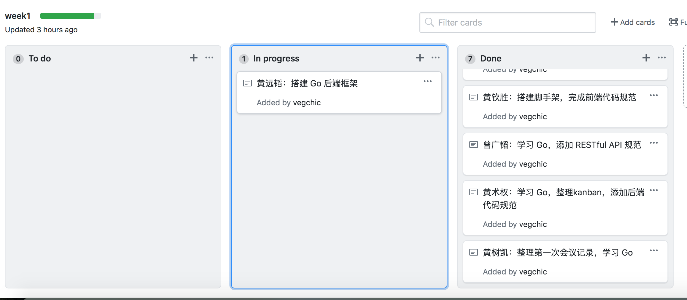
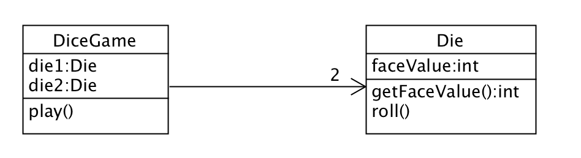

简答题
用简短的语言给出对分析、设计的理解。
分析
首先，系统分析研究程序或业务的过程，以确定其目标和目的，并创建系统和过程来通过有效方式实现这些目标。而且它关注于去调查问题和需求，而不是提出一个解决方案。例如，当我们需要一个新的在线交易系统，我们应该去看这个系统将如何使用，有什么功能。
设计
系统设计是定义体系结构、模块、接口和数据以满足指定需求的过程。系统设计可以看作是系统理论在产品开发中的应用。而且它强调一种概念型的满足用户需求的解决方案，而不是其实现，例如，数据库模式和软件对象的描述。
用一句话描述面向对象的分析与设计的优势。
面向对象的分析与设计通过封装使整个系统更容易理解，而且因此更加容易维护和进行单元测试，这种方法提高了重用性，也从而缩减了整个开发时间，使开发变得更加有效。
简述 UML（统一建模语言）的作用。考试考哪些图？
UML(统一建模语言)是一种标准语言，用于指定、可视化、构造和记录软件系统的构件。UML通常用于建模软件系统，但它并不局限于此边界。它也被用来为非软件系统建模。例如，制造单元中的流程等。
考试考的图
- 用例图：用户角度：功能、执行者
- 静态图：系统静态结构
- 类图：概念及关系
- 对象图：某种状态或时间段内，系统中活跃的对象及其关系
- 包图：描述系统的分解结构
- 行为图：系统的动态行为
- 交互图：描述对象间的消息传递
- 顺序图：强调对象间消息发送的时序
- 合作图：强调对象间的动态写作关系
- 状态图：对象的动态行为。状态 - 事件 - 状态迁移 - 响应动作
- 活动图：描述系统为完成某功能而执行的操作序列
- 交互图：描述对象间的消息传递
- 实现图：描述系统的组成和分布状况
- 构件图：组成部件及其关系
- 部署图：物理体系结构及与软件单元的对应关系
从软件本质的角度，解释软件范围（需求）控制的可行性
计算机软件是于操作有关的程序、以及与之相关的文档集合。由于软件本身的复杂性、不可见性、一致性、可变性，软件范围多数情况下对于客户和开发者都是模糊的，这形成软件产品与其他产品不同的开发过程。
因此，范围管理是软件项目管理的重中之重。在多数情况下，客户与开发者能就项目的 20% 内容给出严格的需求约定，80% 的内容都是相对模糊的。因此，围绕客户目标，发现并满足客户感兴趣的内容是最关键的。
所以对于软件需求，当与客户进行了全面的讨论协商，细化了20%的具体内容和有效需求后就能够满足客户80%的需求，从而有效控制软件需求。
项目管理实践
看板使用练习（提交看板执行结果贴图，建议使用 Git project）
- 使用截图工具（png格式输出），展现你团队的任务 Kanban
- 每个人的任务是明确的。必须一周后可以看到具体结果
- 每个人的任务是1-2项
- 至少包含一个团队活动任务

UML绘图工具练习（提交贴图，必须使用 UMLet）
这里选择教材p9的图1-6来绘制



评论加载中